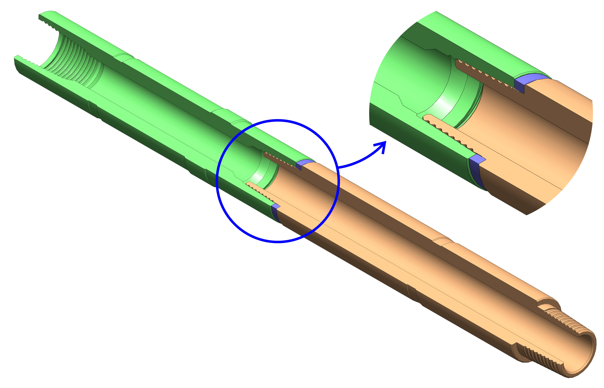
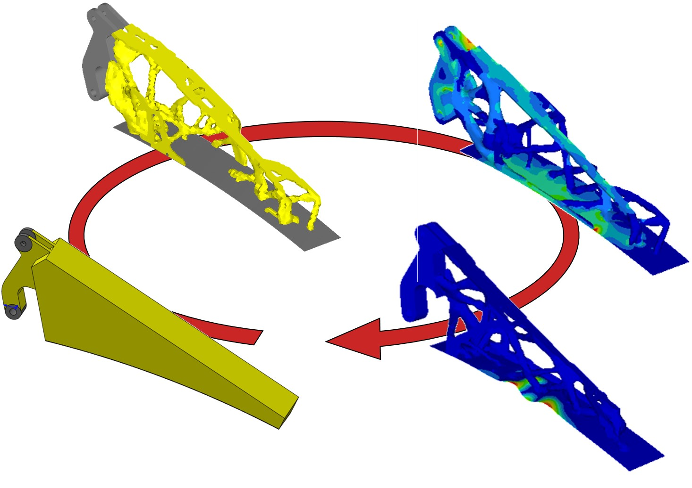

Tho T Nguyen >> Projects with Industry
Three-dimensional model of the sub gap in contact (green: female sub, blue: ceramic ring, orange: male sub) and a cut-out showing contact area.
 Stress relief groove (right) on Male sub compared with the sub without groove in project 1 (left).
Stress relief groove (right) on Male sub compared with the sub without groove in project 1 (left).
Design cycle of a metallic part by topology optimisation (manufacturable by additive manufacturing).
Some figures are not displayed here due to confidentiality.
For more information please contact the webmaster at ngtruongtho@yahoo.fr.
For more information please contact the webmaster at ngtruongtho@yahoo.fr.
Last updated: 21/01/2015